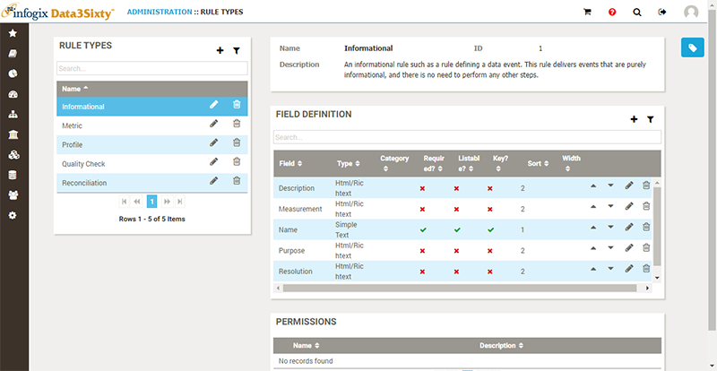
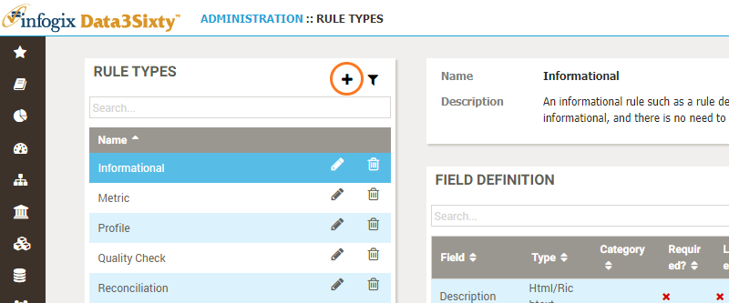
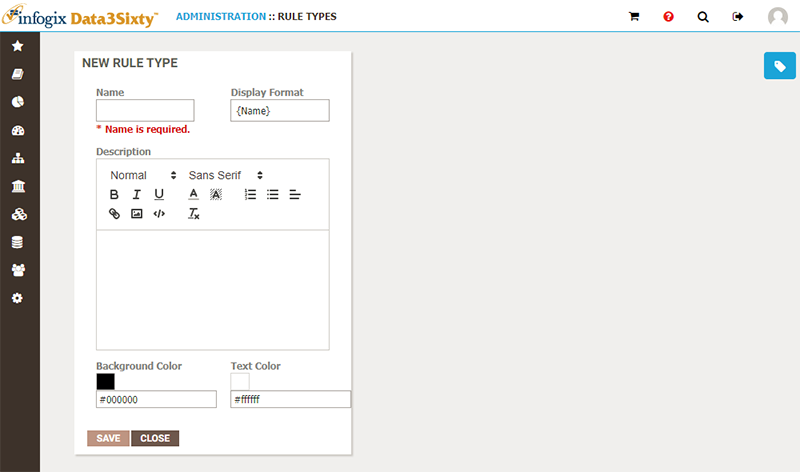
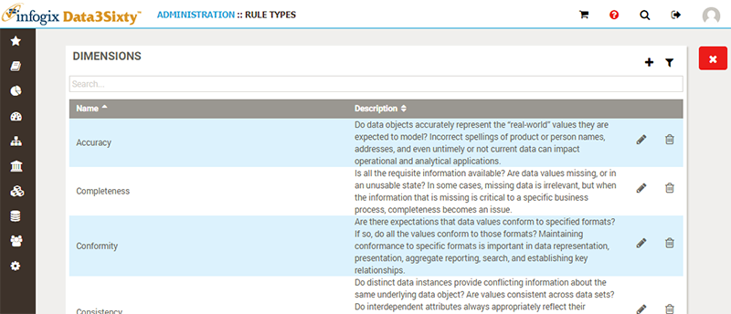
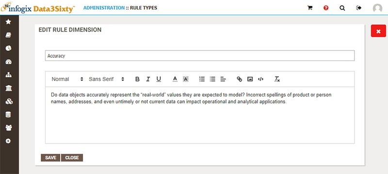
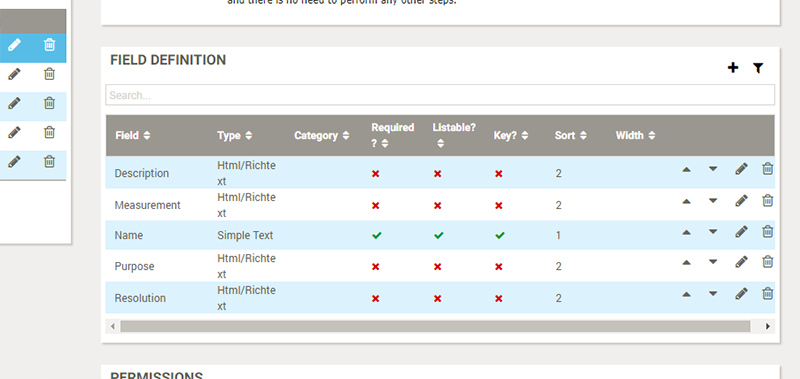

Note: If you are not already familiar with Infogix Data3Sixty quality rules you should first check out the User Guide topics Introduction to assets and Quality rules.
It is the responsibility of the system administrator to define and maintain a set of quality rules, in order to enable Data Steward and Business Owner users to use these quality rules as a framework for collecting quality metrics from other systems and relating them to the artifacts governed by the system.
Choose Administration-MetaModel-Rules to view a list of existing quality rules, with details for the selected item shown on the right:

You can hit the Add button to create a new Quality Rule:

The New Rule Type panel appears:

When browsing, creating or editing rules, the Dimensions view is available on the far right of the screen:
Switching to the Dimensions view allows you to browse, create, edit or remove the dimensions which are encapsulated by the quality rule:

When creating or editing dimensions you specify the name and description:

For the selected quality rule, the Field Definition table on the right is available to determine which fields should be displayed and populated as part of the definition of a rule of this type:

Please refer to the following topic Defining fields on asset types, for full details on editing the fields associated with an asset.
For details on how to manage permissions on artifact types, please refer to the topic Assigning permissions.